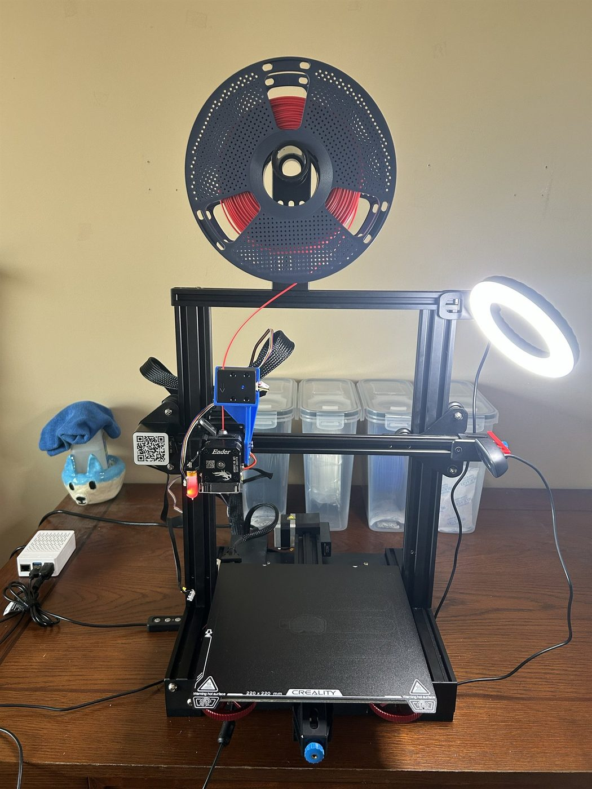
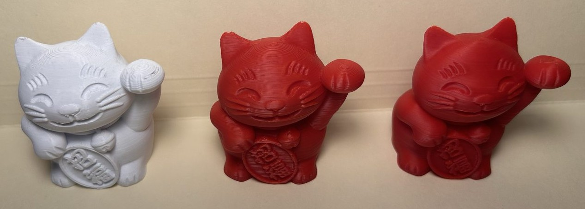
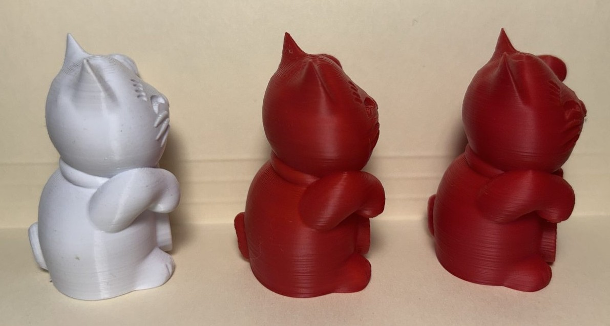
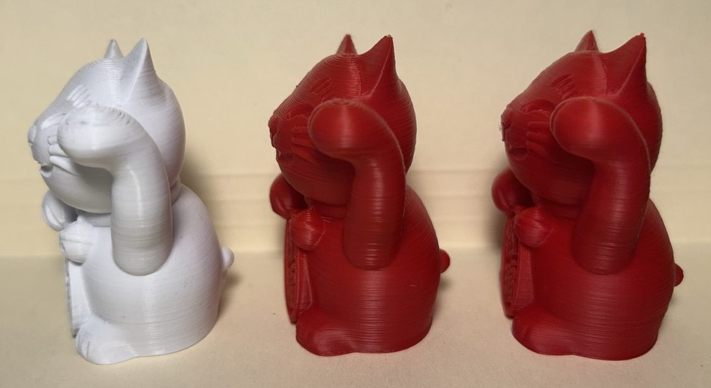
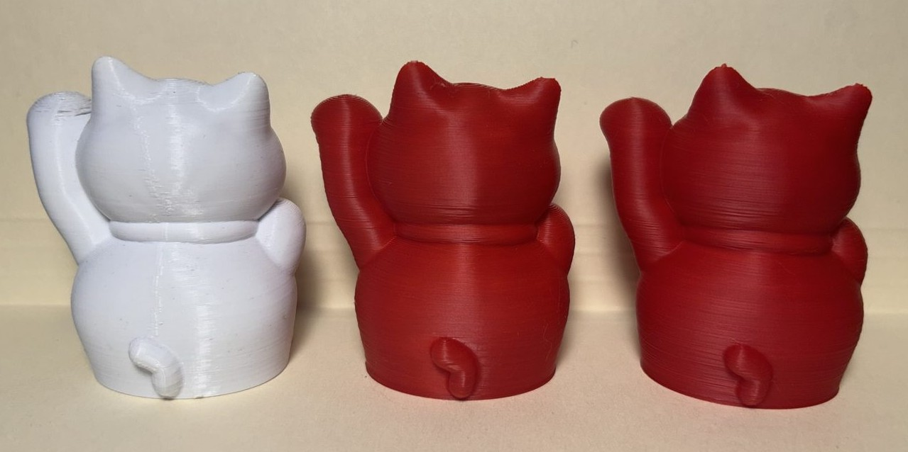
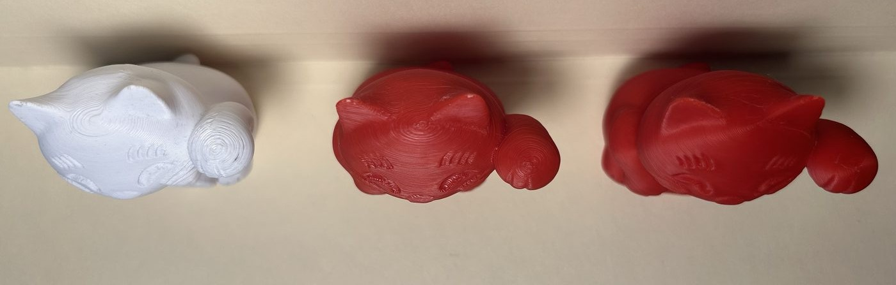

3D Printer Remote Management & Optimization
A Raspberry Pi 5 running Klipper turns a converted Ender 3 V2 into a printer I can drive, watch, and queue jobs on from a browser. Putting it online also turned an offline appliance into a network-facing server, so it got the same security assessment I would give any host at work - and that assessment found a gap I had built myself. The second half of the project was re-measuring every print setting on the machine instead of copying numbers off a forum.
- Klipper
- Security Assessment
- Reverse Proxy
- Host Hardening
- Home Network
The rebuilt machine

Control Stack
| Printer | Creality Ender 3 V2 · converted from Marlin |
|---|---|
| Control host | Raspberry Pi 5 · MainsailOS on Debian 13 |
| Motion | Klipper · motion planning moved off the 8-bit board |
| API layer | Moonraker · bound to loopback |
| Interface | Mainsail · browser client, no server-side logic |
| Edge | Caddy reverse proxy · HTTPS with enforced login |
| Firewall | Default-deny host firewall |
| Extruder | Metal direct-drive |
| Bed | PEI-coated spring steel on stiffer springs |
| Bed leveling | BLTouch probe · replaced manual leveling |
| Patching | Unattended security updates · automatic reboot disabled |
Overview
Converting an Ender 3 V2 from Marlin to Klipper moves motion planning off the printer's 8-bit control board and onto a Raspberry Pi. That is what makes remote operation possible - a web interface for starting and canceling jobs, a live camera feed, status I can check without standing over the machine - and it is also what makes input shaping, pressure advance, and high acceleration possible at all. The tradeoff is that a machine which used to be an offline appliance becomes a server running continuously on my home network, with real hardware behind it.
The control side is a Raspberry Pi 5 running MainsailOS on Debian 13: Klipper for motion, Moonraker as the API layer, Mainsail as the browser interface, and a Caddy reverse proxy in front providing HTTPS and an enforced login.
Networking & Remote Management
Before publishing anything about this, I assessed the box the way I would approach a host at work, scoped to a LAN-only threat model: the adversary is a device already on the home Wi-Fi, not the open internet. I worked from two vantage points - on the host, inventorying listening sockets and reading every service config; and from a separate laptop on the same subnet, probing only the advertised ports with no credentials. That second half is what makes it an assessment rather than a config review. Config tells you what is intended; probing tells you what is reachable.
The finding was not a default I had left switched on. I had already put a TLS reverse proxy with enforced authentication in front of the web interface. The problem was that the authentication protected the interface while leaving the control API exposed alongside it. Mainsail is a JavaScript application running in the browser with no server-side logic of its own - clicking "home the printer" makes the browser call the API directly, and that API was listening outside the proxy entirely.
The reason it happened is the part worth writing down, because it is a mistake that looks like security. The reasoning was "the web interface has a login, therefore the printer is protected." But the login sits in front of the page, and the page is just a client. Authentication has to sit in front of the thing that performs the action, not the thing that displays the buttons. On a 3D printer that is a physical-safety question as much as a data one - the same endpoint drives heaters and motion.
Assessment findings and remediation
| Finding | Remediation | State |
|---|---|---|
| Control API reachable on the LAN without credentials | Default-deny host firewall, then the durable fix: API rebound to loopback so the exposure does not exist to be filtered | Closed - retested from a separate host |
| Host fingerprint disclosed alongside the API | Disclosure removed in the same hardening pass | Closed |
| No automatic security patching | Unattended upgrades enabled for the base OS, automatic reboot disabled because this host runs multi-hour jobs | Closed - base OS only |
| UPnP active on the gateway | Queried the gateway the way an application would; it answered. Nothing is forwarded today, but the mechanism is live | Accepted risk |
Remediation went in two layers, and I verified how the interface actually reached the API before changing anything - assuming a relationship I had not checked is what created the gap in the first place. Layer one was a default-deny host firewall. Layer two was the durable fix: rebinding the API to loopback so the exposure does not exist to be filtered. A firewall filters packets in front of a socket that is still listening everywhere, and one disabled firewall or one rebuild puts it back. Retesting from the same laptop confirmed the exposure was gone and that the web interface and SSH both still worked.
The same pass added unattended security patching, with automatic reboot deliberately disabled because this host runs multi-hour print jobs, and it closed a host-fingerprint disclosure that had been served alongside the API. Reading the patching tool's dry-run output showed it excludes the reverse proxy's own repository - the one component terminating TLS. I left that exclusion in place on purpose, since unattended-upgrading the proxy risks breaking the only authenticated way in with nobody watching, but "I enabled automatic updates" would have been a misleading thing to write down. The automation covers the base OS and nothing else.
One accepted risk, stated plainly: the whole assessment rests on nothing here being reachable from the internet. The router's forwarding table was empty, but UPnP lets an application ask the router to open a port for itself with no approval step, and mappings made that way do not reliably appear in that table. I queried the gateway the way an application would, and it answered. Nothing is forwarded today, but the mechanism is live - a risk I have accepted knowingly rather than one I failed to find.
Printer Optimization
The mechanical rebuild replaced the parts that limit what calibration can reach: a metal direct-drive extruder, a BLTouch probe replacing manual bed leveling, and PEI-coated spring steel on stiffer springs replacing the glass plate. Every value in the two print profiles was then measured on this machine rather than copied off a forum - input shaping with an accelerometer on both axes, with Y the binding axis because on a bed-slinger the entire heated bed is the moving mass.
The most useful thing calibration taught me was that I had been measuring in the wrong unit. The Speed profile's inner wall speed is 200 mm/s against Quality's 160, which looks like a small difference until you convert to material rate: at a 0.20mm layer instead of 0.12mm the cross-section is 67% larger, so the same nozzle deposits 18 mm³/s instead of 8.64. Millimetres per second measures nozzle motion; cubic millimetres per second determines print time. The binding constraint on this printer is not motion, it is melt rate - and raising the nozzle temperature lifted the flow ceiling by 50% with no hardware involved.
Print profiles - measured on this machine, not copied
| Measurement | Speed | Quality |
|---|---|---|
| Inner wall speed | 200 mm/s | 160 mm/s |
| Layer height | 0.20 mm | 0.12 mm |
| Material rate | 18 mm³/s | 8.64 mm³/s |
| Print time | 1h 02m | 2h 18m |






The same three prints from five angles. The back view is the clearest - the original has a vertical seam running up it that neither new print has.
Quality gives smoother curves, finer detail, and better overhangs at 2.23 times the Speed preset's print time - inside the 2.5x ceiling I set as a requirement before tuning began rather than discovered afterward. One honest caveat: the original is white and both new prints are red. White scatters light and hides layer lines while red shows every one, so at some angles the original arguably reads smoother. That understates the improvement rather than overstating it, and both cats are queued for a reprint in white to remove the variable. Acceptance was a full-scale 3DBenchy, deliberately full-scale because a half-scale model puts several features below the retraction threshold and silently invalidates the test.
Two diagnoses were worth more than the numbers. First-layer roughness appeared in fixed patches of the bed on every print. I eliminated five hypotheses in order, including raising the probe grid density, which changed nothing - because the probe measures height, not surface condition. The cause was physical damage to the plate's coating: a worn patch sits at the correct height but has different surface energy, so plastic wets it differently and no amount of probing corrects for that. Separately, the Quality profile tested worse on overhangs than Speed, which made no sense until I found the slicer's overhang cooling threshold - it engages relative to extrusion width, so thinner layers need a steeper angle to trigger it. Speed had not overhung better; its thicker layers had simply tripped the detection earlier. Both are the same lesson: an anomalous result is usually measuring something other than what you think it is.
Phase 2
Phase 1 is complete, with one hardware fault still open and documented - an intermittent controller disconnect I have narrowed but not closed. Queued next, in priority order: a high-flow nozzle, the only lever that raises the melt ceiling now binding the machine; a dual-Z kit, the actual fix for the Z banding I diagnosed and then accepted rather than papered over; and a part cooling duct, the best quality-per-dollar change available. Several of these invalidate calibration values that depend on them, so they need batching rather than installing one at a time.